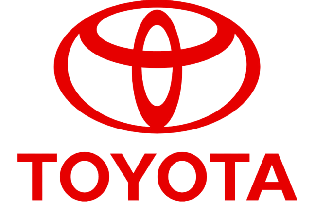

Toyota на Мосфильме
8(495)153-33-79Toyota на Cущевке
8(495)153-11-63Toyota на Таганке
8(495)153-59-98


Выбрать модель
Мы работаем только с Тойота и Лексус уже более 20 лет
К сожалению, даже автомобили Тойота время от времени нуждаются в ремонте. Что связано в первую очередь с особенностями российского климата и дорог. Во вторую — с неаккуратностью ряда владельцев Тойота, допускающих использование как некачественных масел и топлива, так и дешевых несертифицированных запчастей. В автосервисе Толекс Тюнинг вы можете сделать:
Диагностику
Любую. Чаще всего услугу заказывают при купле-продаже автомобиля, но, поскольку без диагностики не проходит ни один ремонт, это одно из важнейших предложений. Услуга недорогая, зато позволяет определить начало появления проблем ещё до того, как они станут очевидны для автовладельца.
Техническое обслуживание
Мы сохраняем дилерскую гарантию и добавляем нашу собственную. Это особенно привлекательно для владельцев машин Тойота с пробегом выше 100.000 км.
Ремонт двигателя
Одна из самых дорогостоящих операций. Но квалификация наших механиков позволит вам сэкономить на этой операции — не всегда для выяснения причин поломки необходимо разбирать сам двигатель.
Ремонт АКПП
Аналогично. Для диагностики автоматической коробки мы по возможности используем визуальный осмотр и оценку состояния коробки при тестовой поездке вместе с владельцем автомобиля. Иногда этого достаточно для понимания ситуации. Более того, порою оказывается, что проблема заключается не в АКПП.
Кузовной ремонт
Всё, начиная от рихтовки Тойота до замены бамперов и покраски. Наша особенная гордость — абсолютное совпадение цвета отремонтированной детали с цветом вашего автомобиля и невозможность отличить сторонним взглядом отремонтированную деталь от новой.
Замена масла в АКПП
Да, возможно провести самому. Но цена услуги столь ничтожна, а сложность и важность качественного проведения достаточно высоки. Автосервис Толекс Тюнинг очистит механизм при помощи вакуума и промоет все резервуары и трубки с целью полного удаления остатков сажи, стружки и прочих нежелательных примесей. Обращайтесь!
Замена тормозных колодок
От своевременного проведения этой операции зависит безопасность на дороге. При этом невозможно определить время замены вслепую, не видя автомобиль. Слишком зависит качество колодок от манеры эксплуатации. Просто заезжайте к нам на ТО!
Шиномонтаж
Заезжайте как к добрым друзьям при любых подозрениях на проблемы со схождением. Меняйте у нас колеса и храните их до следующего сезона!
Запасные части.
Всегда. Много. Недорого. Мы следим за этим. Цены удерживаются на привлекательном уровне как за счет прямых поставок, так и объемов. Как на оригинальные, так и неоригинальные аналоги запчастей вам предоставят сертификаты качества.